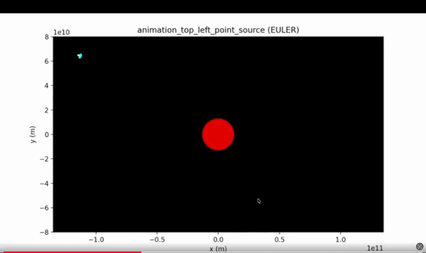

Both simulations trace photon paths through curved spacetime. The RK4 integrator produces smoother, more accurate trajectories at the same step size.
G = gravitational constant
M = mass of the object
c = speed of light
A geodesic is the shortest path in curved spacetime — the path all objects follow when no other force acts on them. Light follows a null geodesic (massless path). We use Einstein's field equations to find this path.
dr (how fast the ray moves radially toward the black hole) and dphi (how fast the angle changes).u = 1/r (inverse radial distance)
φ = orbital angle
rₛ = Schwarzschild radius
After the Schwarzschild model, I extended the simulation to the Kerr metric — which describes a spinning black hole. Spin changes everything: the black hole now drags spacetime around it, creating an ergosphere where particles are forced to co-rotate.
L = g_φφ · φdot + g_tφ · tdot ← angular momentum
The third simulation (2DLensingKerr45.py) replaces the fixed-step RK4 with a Dormand-Prince RK45 adaptive integrator — the same algorithm used by MATLAB's ode45 and SciPy's solve_ivp. Each ray gets its own independently adapting step size.
scale = clamp(scale, 0.2, 5.0)
dl_new = max(dl × scale, 1e-6)
The final simulation lifts everything into full 3D — a 20×20 grid of rays (400 total) shot through 3D space at a Schwarzschild black hole, each bending in its own orbital plane. Three integrators are available at runtime.
--save flag.X = r·cos(θ), Y = r·sin(θ), Z = W(r)
→ 3D Gravitational Lensing Simulation
→ Calculating rotating black holes (Kerr metric)
→ Interactive GUI Simulation
→ Energy / Relativistic Effects
All four goals were achieved in the successor project: Black Hole GPU Ray Tracing →